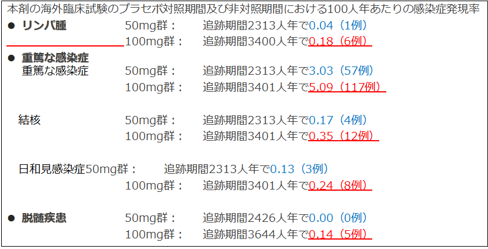

３．SIMはMTXが使用できない場合、単剤で初回から100㎎が使用できます
SIM100mgは50㎎よりも重篤な感染症等の副作用の頻度が高い
リンパ腫・重篤な感染症・脱髄疾患の副作用で、50mg群に比べて100mg群で頻度が高かったという結果が、添付文書の使用上の注意(使用上の注意 9．その他の注意)に記載されています。

高齢や合併症等の理由でMTXが使えない患者さんに
SIM50㎎よりも副作用発生頻度の高いSIM100㎎から使用するのはリスクではないか？
３．SIMはMTXが使用できない場合、単剤で初回から100㎎が使用できます
リンパ腫・重篤な感染症・脱髄疾患の副作用で、50mg群に比べて100mg群で頻度が高かったという結果が、添付文書の使用上の注意(使用上の注意 9．その他の注意)に記載されています。
高齢や合併症等の理由でMTXが使えない患者さんに
SIM50㎎よりも副作用発生頻度の高いSIM100㎎から使用するのはリスクではないか？